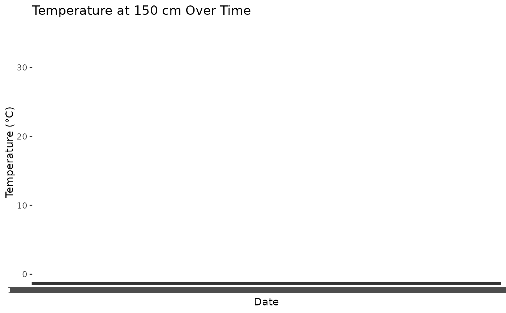

This dataset, named station_sample, provides daily weather observations from a specific weather monitoring station (NH0472). It includes various meteorological variables such as temperature, wind speed, and radiation. It serves as a resource for climate studies and analysis of day-to-day weather patterns.
Usage
data(station_sample)Format
A data frame with the following columns:
- id
Character. Identifier for the weather station (e.g., "NH0472").
- fecha
Date. Observation date in YYYY-MM-DD format (e.g., "1961-07-01").
- temperatura_abrigo_150cm
Numeric. Temperature at 150 cm under shelter, in degrees Celsius (e.g., "11.1").
- temperatura_abrigo_150cm_maxima
Numeric. Maximum daily temperature at 150 cm under shelter, in degrees Celsius (e.g., "13.4").
- temperatura_abrigo_150cm_minima
Numeric. Minimum daily temperature at 150 cm under shelter, in degrees Celsius (e.g., "8.8").
- temperatura_intemperie_5cm_minima
Numeric. Minimum daily temperature at 5 cm in open air, in degrees Celsius (e.g., "6.2").
- temperatura_intemperie_50cm_minima
Numeric. Minimum daily temperature at 50 cm in open air, in degrees Celsius (e.g., "4.5").
- temperatura_suelo_5cm_media
Numeric. Average daily soil temperature at 5 cm depth, in degrees Celsius (e.g., "10.0").
- temperatura_suelo_10cm_media
Numeric. Average daily soil temperature at 10 cm depth, in degrees Celsius (e.g., "9.8").
- temperatura_inte_5cm
Numeric. Temperature at 5 cm under cover, in degrees Celsius (e.g., "7.3").
- temperatura_intemperie_150cm_minima
Numeric. Minimum daily temperature at 150 cm in open air, in degrees Celsius.
- humedad_suelo
Numeric. Soil humidity percentage.
- precipitacion_pluviometrica
Numeric. Daily rainfall in mm.
- granizo
Logical. Indicator of hail occurrence (TRUE/FALSE).
- nieve
Logical. Indicator of snow occurrence (TRUE/FALSE).
- heliofania_efectiva
Numeric. Effective sunshine duration in hours.
- heliofania_relativa
Numeric. Relative sunshine duration as a percentage.
- tesion_vapor_media
Numeric. Average daily vapor tension in hPa.
- humedad_media
Numeric. Average daily humidity percentage (e.g., "75.3").
- humedad_media_8_14_20
Numeric. Average humidity at 8 AM, 2 PM, and 8 PM.
- rocio_medio
Numeric. Average daily dew point temperature in degrees Celsius.
- duracion_follaje_mojado
Numeric. Duration of wet foliage in hours.
- velocidad_viento_200cm_media
Numeric. Average wind speed at 2 m height in m/s.
- direccion_viento_200cm
Numeric. Wind direction at 2 m height in degrees from north.
- velocidad_viento_1000cm_media
Numeric. Average wind speed at 10 m height in m/s.
- direccion_viento_1000cm
Numeric. Wind direction at 10 m height in degrees from north.
- velocidad_viento_maxima
Numeric. Maximum daily wind speed, in m/s (e.g., "8.5").
- presion_media
Numeric. Average daily atmospheric pressure, in hPa (e.g., "1015.6").
- radiacion_global
Numeric. Global radiation in kJ/m² (e.g., "520.3").
- radiacion_neta
Numeric. Net radiation in kJ/m² (e.g., "300.4").
- evaporacion_tanque
Numeric. Daily tank evaporation in mm (e.g., "2.5").
- evapotranspiracion_potencial
Numeric. Potential evapotranspiration in mm (e.g., "4.0").
- profundidad_napa
Numeric. Depth of the water table in meters (e.g., "1.8").
- horas_frio
Numeric. Total daily cold hours (e.g., "15.6").
- unidad_frio
Numeric. Unit for cold hours, if applicable (e.g., "-").
Details
Each row represents daily observations from the NH0472 weather station. This dataset can be used to analyze seasonal and daily trends in weather parameters, including temperature variations, humidity levels, and wind conditions.
Examples
data(station_sample)
head(station_sample)
#> id fecha temperatura_abrigo_150cm
#> 1961-07-01 NH0472 1961-07-01 11.1
#> 1961-07-02 NH0472 1961-07-02 5.5
#> 1961-07-03 NH0472 1961-07-03 6.0
#> 1961-07-04 NH0472 1961-07-04 NA
#> 1961-07-05 NH0472 1961-07-05 12.4
#> 1961-07-06 NH0472 1961-07-06 11.0
#> temperatura_abrigo_150cm_maxima temperatura_abrigo_150cm_minima
#> 1961-07-01 13.4 8.8
#> 1961-07-02 10.5 0.5
#> 1961-07-03 10.8 1.2
#> 1961-07-04 NA 7.0
#> 1961-07-05 14.8 10.0
#> 1961-07-06 16.5 5.5
#> temperatura_intemperie_5cm_minima temperatura_intemperie_50cm_minima
#> 1961-07-01 NA NA
#> 1961-07-02 NA NA
#> 1961-07-03 NA NA
#> 1961-07-04 NA NA
#> 1961-07-05 NA NA
#> 1961-07-06 NA NA
#> temperatura_suelo_5cm_media temperatura_suelo_10cm_media
#> 1961-07-01 NA NA
#> 1961-07-02 NA NA
#> 1961-07-03 NA NA
#> 1961-07-04 NA NA
#> 1961-07-05 NA NA
#> 1961-07-06 NA NA
#> temperatura_inte_5cm temperatura_intemperie_150cm_minima
#> 1961-07-01 NA NA
#> 1961-07-02 NA NA
#> 1961-07-03 NA NA
#> 1961-07-04 NA NA
#> 1961-07-05 NA NA
#> 1961-07-06 NA NA
#> humedad_suelo precipitacion_pluviometrica granizo nieve
#> 1961-07-01 NA 0 0 0
#> 1961-07-02 NA 0 0 0
#> 1961-07-03 NA 0 0 0
#> 1961-07-04 NA 0 0 0
#> 1961-07-05 NA 0 0 0
#> 1961-07-06 NA 0 0 0
#> heliofania_efectiva heliofania_relativa tesion_vapor_media
#> 1961-07-01 NA NA 9.8
#> 1961-07-02 NA NA 7.9
#> 1961-07-03 NA NA 7.5
#> 1961-07-04 NA NA 14.9
#> 1961-07-05 NA NA 17.2
#> 1961-07-06 NA NA 11.5
#> humedad_media humedad_media_8_14_20 rocio_medio
#> 1961-07-01 NA 81 6.7
#> 1961-07-02 NA 80 3.6
#> 1961-07-03 NA 62 2.9
#> 1961-07-04 NA 93 12.9
#> 1961-07-05 NA 92 15.1
#> 1961-07-06 NA 80 9.0
#> duracion_follaje_mojado velocidad_viento_200cm_media
#> 1961-07-01 NA 14.4
#> 1961-07-02 NA 4.8
#> 1961-07-03 NA 7.2
#> 1961-07-04 NA 8.8
#> 1961-07-05 NA 4.8
#> 1961-07-06 NA 14.4
#> direccion_viento_200cm velocidad_viento_1000cm_media
#> 1961-07-01 NA 18
#> 1961-07-02 NA 6
#> 1961-07-03 NA 9
#> 1961-07-04 NA 11
#> 1961-07-05 NA 6
#> 1961-07-06 NA 18
#> direccion_viento_1000cm velocidad_viento_maxima presion_media
#> 1961-07-01 NA NA NA
#> 1961-07-02 NA NA NA
#> 1961-07-03 NA NA NA
#> 1961-07-04 NA NA NA
#> 1961-07-05 NA NA NA
#> 1961-07-06 NA NA NA
#> radiacion_global radiacion_neta evaporacion_tanque
#> 1961-07-01 NA NA NA
#> 1961-07-02 NA NA NA
#> 1961-07-03 NA NA NA
#> 1961-07-04 NA NA NA
#> 1961-07-05 NA NA NA
#> 1961-07-06 NA NA NA
#> evapotranspiracion_potencial profundidad_napa horas_frio unidad_frio
#> 1961-07-01 NA NA 0.000000 NA
#> 1961-07-02 NA NA 15.600000 NA
#> 1961-07-03 NA NA 14.500000 NA
#> 1961-07-04 NA NA NA NA
#> 1961-07-05 NA NA 0.000000 NA
#> 1961-07-06 NA NA 3.272727 NA
# Example: Plotting temperature trends over time
if (requireNamespace("ggplot2", quietly = TRUE)) {
library(ggplot2)
ggplot(station_sample, aes(x = fecha, y = temperatura_abrigo_150cm)) +
geom_line() +
labs(title = "Temperature at 150 cm Over Time",
x = "Date", y = "Temperature (°C)")
}
#> Warning: Removed 66 rows containing missing values or values outside the scale range
#> (`geom_line()`).
#> `geom_line()`: Each group consists of only one observation.
#> ℹ Do you need to adjust the group aesthetic?
